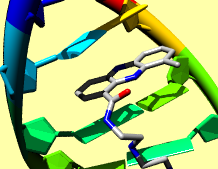

|  |
The Persistence of Vision Raytracer (POV-Ray) is included with Chimera. POV-Ray images can be saved:
See also: exporting a scene, tips on preparing images
Chimera includes ambient light and up to three directional lights: key, fill, and back (details...). Lighting parameters can be adjusted with the Lighting tool or lighting command and are propogated to POV-Ray for raytracing. By default, only the key light produces shiny highlights and shadows. Shadows from raytracing can be made less severe by decreasing the contrast. Also, it may be useful to move the lights (change their directions) and/or adjust the key-fill ratio.
Interactive shadows can be used to preview shadow locations. If system hardware permits, these can be enabled with the Effects tool or the command set shadows. In some cases, interactive shadows may suffice as an alternative to raytracing; their appearance can be improved by increasing the shadow quality setting in the Effects tool (albeit at the cost of increased graphics memory usage).
Sometimes a considerable speedup in raytracing can be obtained with little change in output appearance by adjusting settings in the POV-Ray Options preferences. This is particularly true for movies, which are compressed to some extent during encoding. Changes to consider include:
Raytracing jobs can be monitored and canceled using the Task Panel.
Raytracing can be quite slow; see balancing time requirements and results.
Using transparency or clipping may increase rendering time significantly. If objects are not actually clipped, clipping should be turned off, as mentioned above.
The max_trace_level parameter is set to 10 to improve multi-level transparency [details at the POV-Ray site], but this also increases time and memory requirements relative to lower levels.
Only the PNG format can be saved.
If image dimensions are specified in units of length rather than pixels, they are multiplied by the resolution to give the correct number of output pixels, but the dimensions in units of length are “forgotten” (not included in the image file).
A raytraced image from POV-Ray may differ from the view in Chimera in several ways. Some differences are desirable, such as the presence of shadows. Others reflect current limitations of the POV-Ray format and/or its implementation in Chimera: